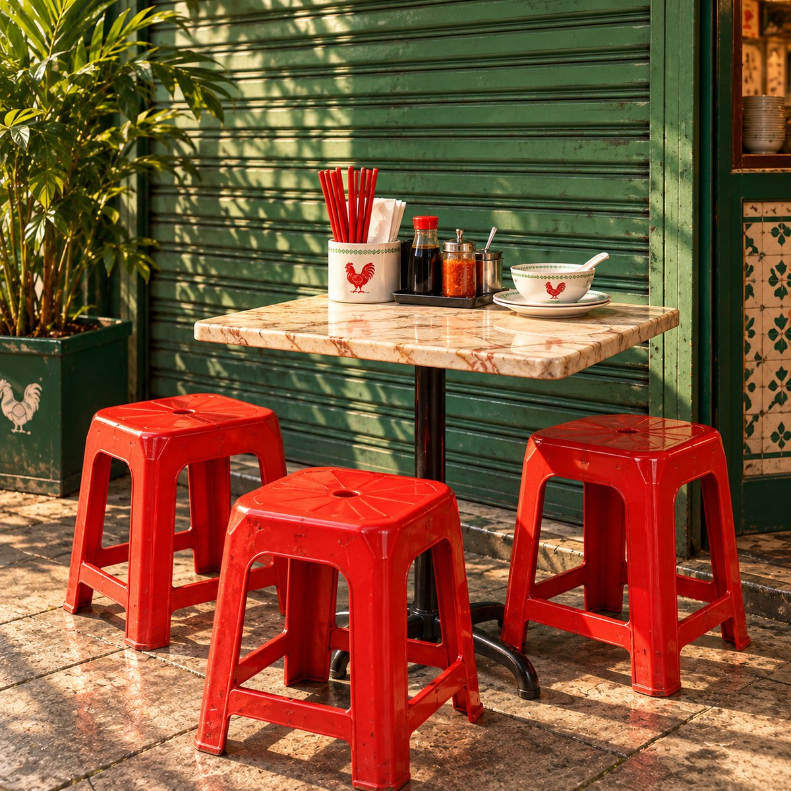
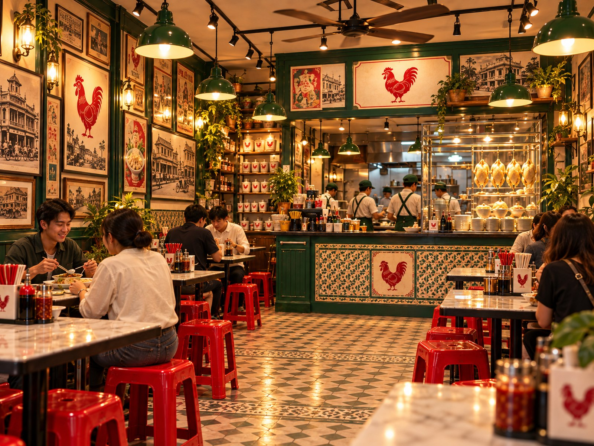

มีงานทำ
แต่ไม่พบตัวตน
ทำงานอยู่ในระบบ ตื่น ทำงาน กลับบ้าน แล้วเริ่มใหม่ จนวันหนึ่งเริ่มถามว่า เรากำลังใช้ชีวิตของใครอยู่กันแน่

ข้าวมันหอม ไก่นุ่ม น้ำราดมีรสจำ — ร้านเล็ก ๆ ที่อยากทำมื้อธรรมดาให้น่ากลับมากินซ้ำ
เลือกทางลัด แล้วค่อยเพิ่มหรือลดจำนวนในตะกร้าได้ทันที

ทำงานอยู่ในระบบ ตื่น ทำงาน กลับบ้าน แล้วเริ่มใหม่ จนวันหนึ่งเริ่มถามว่า เรากำลังใช้ชีวิตของใครอยู่กันแน่
คิดได้หลายอย่าง อยากทำได้หลายอย่าง แต่ชีวิตจริงเลือกทุกทางพร้อมกันไม่ได้ จึงต้องเลือกสิ่งหนึ่งแล้วทำมันให้จริง
อาหารเป็นเรื่องพื้นฐานที่สุดของชีวิต มื้อหนึ่งอาจไม่เปลี่ยนโลก แต่ทำให้วันธรรมดาของใครบางคนดีขึ้นได้
เรียบง่าย เข้าใจง่าย กินได้ทุกวัย และมีรายละเอียดมากพอให้ตั้งใจทำทุกส่วน ตั้งแต่ข้าว ไก่ น้ำซุป ไปจนถึงน้ำราด
ไม่ได้อยากเป็นอาหารพิเศษที่กินปีละครั้ง แต่อยากเป็นร้านที่นึกถึงได้ในวันธรรมดา — ดีพอให้อยากกลับมากินอาทิตย์ละสองมื้อ
ถ้าคนหนึ่งกินแล้วชอบ เขาจะกลับมา ถ้าชอบมากพอ เขาจะพาคนอื่นมา นั่นคือวิธีที่อยากให้ “กลับบ้าน” เติบโตไปไกล
กลับบ้านข้าวมันไก่ · กินดี เหมือนกลับบ้าน
น้ำราดสิงคโปร์คือรสจำของ “กลับบ้าน” — หอม กลมกล่อม มีน้ำหนักพอจะพาไก่กับข้าวมันไปด้วยกัน แต่ยังเป็นรสที่กินง่ายในมื้อประจำวัน



โครง Front End พร้อมสำหรับใส่พิกัดร้าน เวลาเปิด และ LINE OA จริงภายหลัง
